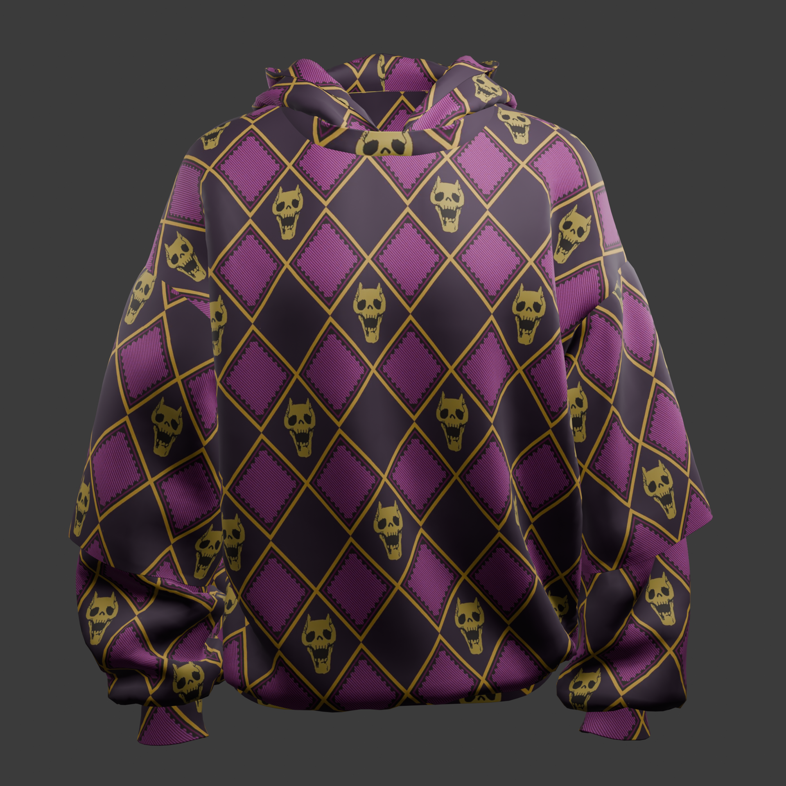

Kira Alt Hoodie
Moody, high-contrast anime apparel concept focused on silhouette impact and layered visual tension across variants.
Moody, high-contrast anime apparel concept focused on silhouette impact and layered visual tension across variants.
